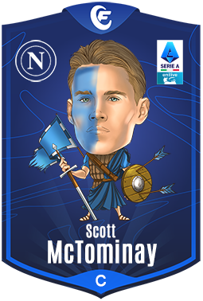

Informazioni: Nazionalità: Americano
Età:26anni
Altezza:1,77
Piede preferito:entrambi
Statistiche: Presenze:34
Gol:11
Assist:9
Cartellini Gialli:1
Cartellini rossi:0
Informazioni:
Nazionalità:italiana
Età:28anni
Altezza:1,83
piede preferito:sinistro
Statistiche:
Presenze:30
Gol:15
Assist:4
Cartellini gialli:2
Cartellini rossi:0

Informazioni:
Nazionalità:Scozzese
Età:28anni
Altezza:1,91
Piede preferito:destro
Statistiche:
Presenze:34
Gol:12
Assist:4
Cartellini gialli:3
Cartellini rossi:0
Informazioni:
Nazionalità: Olandese
Eta:26anni
Altezza:1,85
Piede preferito:destro
Statistiche:
Presenze:37
Gol:10
Assist:4
Cartellini gialli:2
Cartellini rossi:1
Informazioni:
Nazionalità: Americano
Età:26anni
Altezza:1,77
Piede preferito:entrambi
Statistiche:
Presenze:34
Gol:11
Assist:9
Cartellini Gialli:1
Cartellini rossi:0
Informazioni:
Nazionalità: Svizzera
Età:24anni
Altezza:1,84
Piede preferito:destro
Statistiche:
Presenze:30
Gol:8
Assist:4
Cartellini Gialli:4
Cartellini rossi:0

Informazioni:
Nazionalità:Italiana
Età:29anni
Altezza:1,76
Piede preferito:destro
Statistiche:
Presenze:34<
Gol:8
Assist:6
Cartellini Gialli:10
Cartellini Rossi:0


Informazioni:
Nazionalità:Argentino
Età:20anni
Altezza:1,86
Piede preferito:sinistro
Statistiche:
Presenze:35
Gol:6
Assist:8
Cartellini Gialli:6
Cartellini Rossi:0

Informazioni:
Nazionalità:Turchia
Età:31anni
Altezza:1,78
Piede preferito:destro
Statistiche:
Presenze:29
Gol:5
Assist:6
Cartellini Gialli:5
Cartellini Rossi:0